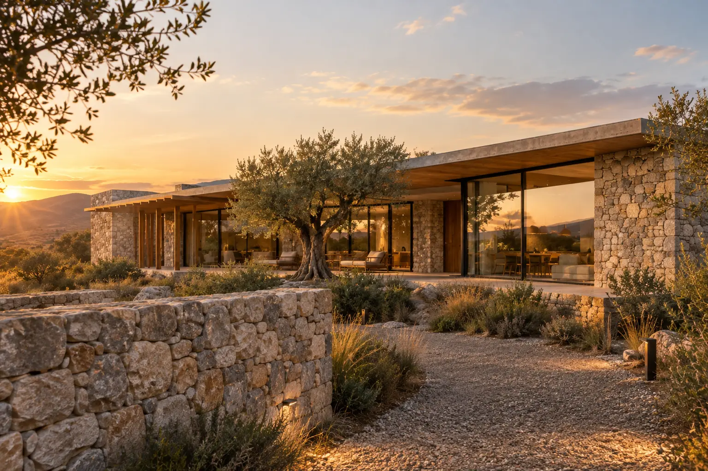
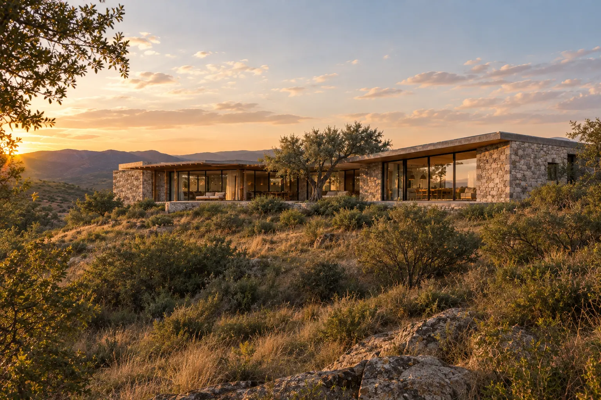
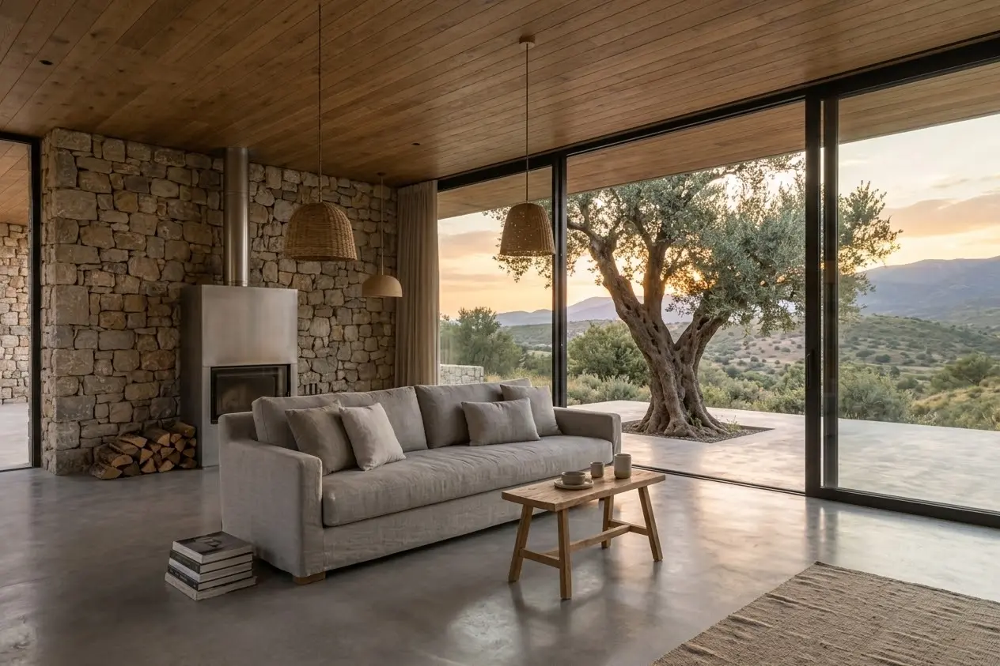
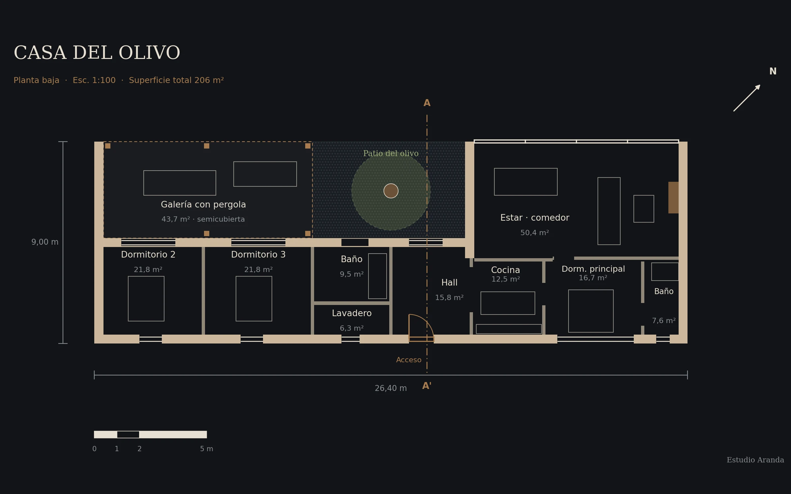
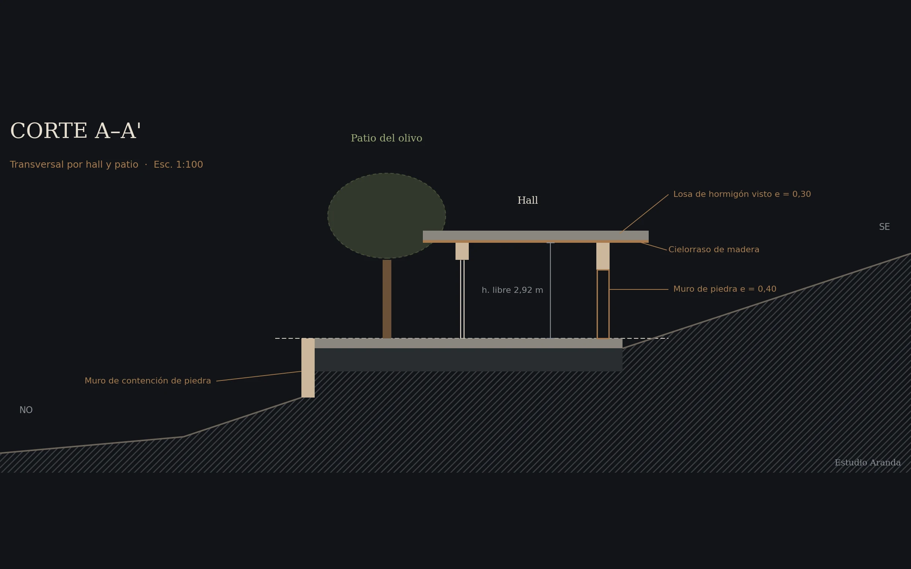

01 — RESIDENCIAL
Casa del Olivo
Traslasierra, Córdoba · 2024
Superficie
206 m²
Programa
Vivienda unifamiliar
Estado
Construida
Orientación
Noroeste
MEMORIA DESCRIPTIVA
Una casa entre árboles.
La Casa del Olivo nace del deseo de habitar el paisaje sin imponerse. Se emplaza en una ladera natural, combinando piedra, hormigón y madera para generar una conexión continua entre el interior y el entorno.


REGISTRO FOTOGRÁFICO
Galería de obra
CASA DEL OLIVO — 01 / 08
DOCUMENTACIÓN TÉCNICA
Planos y cortes

